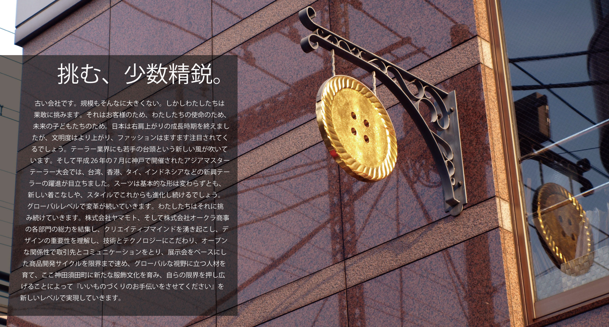

会社概要
商号 Company Name |
株式会社ヤマモト Yamamoto & Co., Ltd. |
|---|---|
所在地 Location | 〒101-0041 東京都千代田区神田須田町2-5 2-5 Kandasudacho, Chiyoda-ku, Tokyo, 101-0041 JAPAN |
創業 Founded | 昭和22年6月6日 June 6th, 1947 |
資本金 Capital | 3,000万円 30 million yen |
年商 Annual Sales | 4億765万円 (平成26年7月期) (グループ年商: 約13億円) 476 million yen (Group: 1,300 million yen) |
事業内容 Business Activities | オーダー紳士・婦人服用裏地・ボタン等服飾附属品全般の卸販売、紳士フォーマル洋品の製造卸販売および紳士服縫製受託 1. Wholesale of garment materials for men's and women's custom tailored suit and apparel |
代表者 President | 代表取締役 山本 治彦 Haruhiko Yamamoto |
従業員数 Number of employees | 18名 (グループ従業員数: 41名) 18 (Group: 41) |
決算期 Fiscal Year | 7月31日 (年一回) From August 1 to July 31 of the following year |
主要取引銀行 Main Bank | みずほ銀行 神田駅前支店 Mizuho Bank, Ltd. KANDA-EKIMAE Branch |
拠点 Offices | 本店のみ (〒101-0041 東京都千代田区神田須田町2-5) Only Headquarters |
グループ会社 Group | 株式会社オークラ商事 (東京都千代田区: アパレル紳士・婦人服用裏地・服飾附属品の卸販売) Okura Shoji Co., Ltd. (Located in Tokyo, wholesale of garment materals for apparel) |
ご挨拶
リーマン・ショック後の激動の中で代表取締役に就任し、まもなく3年が経とうとしております。情報産業に12年間身を置き、この歴史ある会社の3代目として入社してきたわけですが、今の時代ほど、この業界が面白かったことはなかったのではないかと思うほど、古きと新しきが交わりイノベーションを生むということを日々目のあたりにしております。
われわれのお客様であるテーラー様、そしてアパレルメーカー様の考えておられることをよく知りたいと、2年前にメンズものづくり塾という塾に通い、1年でジャケットのパターンと縫製、1年でベスト、スラックスのパターンと縫製を勉強いたしました。出来上がったものは到底見れたものではありませんでしたが、縫う喜び、生み出す喜びを感じ、そしてわれわれが扱う副資材やアクセサリーの重要性をあらためて認識いたしました。
業界の問題も認識しています。機能していない古い慣習が残っていること。そして情報化をはじめとしたイノベーションが起こりづらい構造になっていること。日々に流されるだけでは到底変えられないことを、リーダーシップを発揮し、社員一人ひとりが自律的にエンパワメントされる企業文化を創りあげ、時代の流れを敏感に察知しながら、弛まぬ努力と強い決意で変えていこうと思っております。
黒子として生きる業界ですので、ともするとファッションというものから遠ざかってしまう方も多い業界ですが、われわれはそれとは異なるものになろうと思っています。ファッションの楽しさを理解するために、雑誌や業界紙を欠かさず読み、展示会やファッションショーに積極的に顔を出し、お客様の洋服を購入することに対して半額補助を出し、デザイン・パターン・縫製というものづくり機能に注力しています。
価値あることをしなければそこに存在する理由はありません。かつて、グローバリゼーションや情報革命が起こる前、単なる知識や権益だけが幅を効かせ、値しない利を得ている時代がありました。その構造が変わった今、唯一頼りになる武器はわたしたちの知恵であり、イノベーティブマインドです。
この新しいホームページのすべてのセクションに書かれていることをすべて着実に実施し、お客様に貢献し、世界がよりよい場所になる一つの力になりたいと思っております。今後とも、何卒宜しくお願い申し上げます。
株式会社ヤマモト
代表取締役 山本治彦
Apr 1, 2015
沿革
昭和22年6月 Jun 1947 |
合資会社山本商店設立 Yamamoto Company Founded |
|---|---|
昭和28年 1953 |
婦人部開設 Women's Department Founded |
昭和33年12月 Dec 1958 |
大蔵商事株式会社設立 Okura Shoji Founded |
昭和34年 1959 |
株式会社山本商店に改組 Incorporated to Yamamoto Company |
昭和37年 1962 |
札幌店開設 Sapporo Office Opened |
昭和43年 1968 |
株式会社ヤマモトに商号変更 Company Name Changed to Yamamoto & Co., Ltd. |
昭和44年4月 Apr 1969 |
大蔵商事株式会社が株式会社オークラ商事に商号変更 Okura Shoji's Company Name Changed to Okura Shoji |
平成5年5月 May 1993 |
東京神田にヤマモトビル竣工 Yamamoto Building Constructed in Kanda, Tokyo |
平成22年8月 Aug 2010 |
婦人部を株式会社オークラ商事に移管 Women's Department Transferred to Okura Shoji |
平成24年8月 Aug 2012 |
代表取締役社長に山本治彦が就任 Haruhiko Yamamoto became the president |
経営戦略
新商品開発。わたしたちはお客様に最も近いところにいます。そして同時にものづくりの現場にもいます。かつて物が溢れていた時代、他社と同じように仕入れ、在庫し、販売するだけでお客様のニーズを満たすことができました。しかし今は違います。しっかりと差別化された上で、わたしたちのお客様に合う上質で、デザイン性あふれるプロダクトを開発していかなければなりません。工場やメーカーと協業しつつ、わたしたちで物を生み出していきます。
戦略的営業とカイゼン。御用聞き営業は今の時代には必要ありません。世界がかつてないほど小さくなり、情報は高速で世の中に流れています。お客様が何を求めているか、それをどのようにお伝えしたらいいか、新しく提供できる革新的な顧客サービスは何か。そのようなことを考え、まさに戦略的に営業活動を行ってまいります。また、車の両輪であるオペレーションにおいて卓越を求めます。自社開発のクラウドシステムでお客様や仕入先と繋がります。トヨタのカイゼンに学び、日々業務を改善します。
3つの新成長戦略。ITではEコマースはもとより、自社開発のクラウドアプリケーションにてお客様に新しい価値を提供して参ります。PFIDやロボティクス、3Dプリンタなどの技術も追い求めていきます。海外戦略は調達サイドと販売サイドがあります。古くから取引のあるイタリアのボタンメーカーを軸に、イギリスのシルク生地メーカー、パリのカフスメーカー、イタリアの裏地メーカー、そして中国をはじめとしたアジアからの海外調達を行い、お客様への価値を提供します。販売面では海外展示会を皮切りに、副資材そしてアクセサリー販売を行ってまいります。M&Aでは仕入先や同業者とのコラボレーションや統合により規模の経済を発揮させ、業界の効率化の一端を担います。
メーカー戦略。新中期経営計画にてプライベートブランドを含めたメーカー戦略をあらためて発表いたしました。ものづくりセンターの設置、社内人材の育成、新しいプレゼンテーションを含めた新しい存在へと変化して参ります。
EXCYについて
EXCYはExcellent、Exceed、ExcitementなどのEXとセクシー(SEXY)さをイメージとして加えた造語です。企業の発展と共にお客様に新たなご満足を提供する為にこの企業ブランドは生まれました。（商標登録済み）
株式会社ヤマモトそしてEXCYは「遊び心」を大切にします。洋服は海外より伝わってきた服装文化ですが、日本においても古来よりボタンや裏地において「粋」を競ってきました。
EXCYはそんな日本人の心を大切にし、ちょっとしたこだわりを持つ魅力的な商品を今日もお客様にご提供し続けています。
EXCYはお客様と共に進化します。テーラー様や専門店のお客様、そしてあらゆるお客様に対して付加価値の高い商品をいつまでもお届けしてまいります。
採用情報
募集中ポジション①: フォーマル部スタッフ
ポジション Position |
フォーマル部スタッフ |
|---|---|
概要 Overview |
業容を拡大しているフォーマル部の主力スタッフとして有能な人材を探しています。基本的には内勤業務主体(受発注、出荷・検品、企画・デザイン他)となりますが適性があれば営業にも挑戦していただきたいと思います。 |
職務内容 Description |
メンズフォーマルアクセサリーに関する |
募集時期 Recruitement Period |
随時 |
待遇 Conditions |
・正社員採用 |
資格 Qualification |
・高卒、短大卒、大卒問いません |
勤務地 Place To Work |
本社(東京都千代田区神田須田町2-5) |
勤務時間 Working Hours |
9:00 ～ 18:00 （休憩1時間） |
福利厚生 Benefits |
・資格取得補助 |
採用プロセス Recruitement Process |
・contact@excy.co.jp 宛てに履歴書、経歴書を送付 |
その他 Others |
採用後教育研修：基本オリエンテーションの後、OJTを6ヶ月程度実施 |
募集中ポジション②: ものづくり職人
ポジション Position |
ものづくり職人 |
|---|---|
概要 Overview |
縫製部においてフォーマル部、紳士部の縫製加工の仕事を含むものづくり系の仕事をやっていただきたいと思います。経験、技術にもよりますが、最初は蝶ネクタイやカマーバンドなどの縫製加工から入り、将来的には縫製部の主力商品である一点縫いの技術指導を含む生産管理・顧客対応をやっていただきたいと思っています。 |
職務内容 Description |
縫製部において |
募集時期 Recruitement Period |
随時 |
待遇 Conditions |
・正社員採用 |
資格 Qualification |
・高卒、短大卒、大卒問いません |
勤務地 Place To Work |
本社(東京都千代田区神田須田町2-5) |
勤務時間 Working Hours |
9:00 ～ 18:00 （休憩1時間） |
福利厚生 Benefits |
・資格取得補助 |
採用プロセス Recruitement Process |
・contact@excy.co.jp 宛てに履歴書、経歴書を送付 |
その他 Others |
採用後教育研修：基本オリエンテーションの後、OJTを6ヶ月程度実施 |